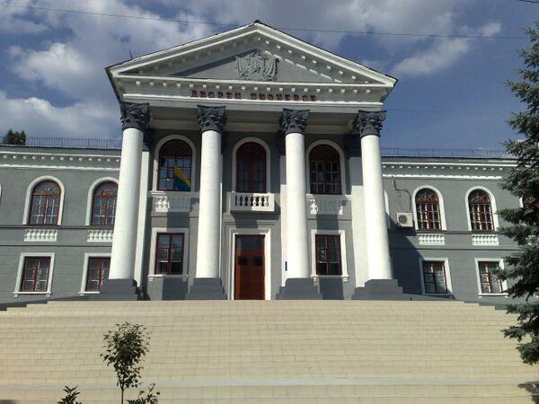
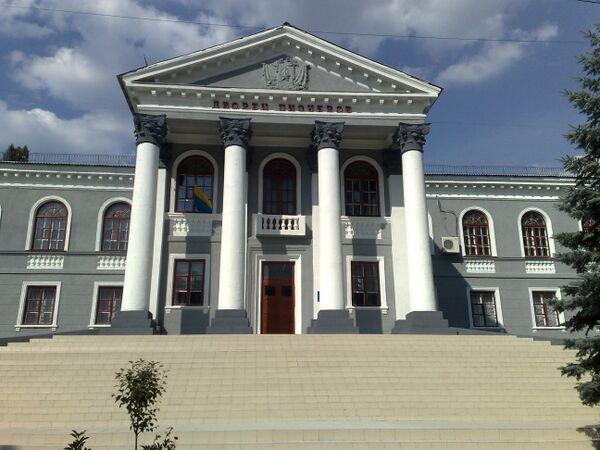

10.10.2025
Начались работы по модернизации оборудования на одной из старейших шахт города. Ожидается увеличение производства угля на 15%.
Торез — город в Донецкой Народной Республике России. Является городом республиканского значения и административным центром одноимённого городского округа Торез.
В городской округ входят 3 городских населённых пункта
| Населённый пункт | Тип | Население 2022г (чел.) |
|---|---|---|
| Торез | Город | 53 462 |
| Пелагеевка | пгт | 17 833 |
| Рассыпное | пгт | 4997 |


 

Начались работы по модернизации оборудования на одной из старейших шахт города. Ожидается увеличение производства угля на 15%.
В Торезе пройдет традиционный фестиваль с участием местных коллективов. Концерты и выставки запланированы на 5 ноября в городском парке.
В центре города установлен новый памятник в честь шахтеров-участников Великой Отечественной войны. Торжественное открытие состоялось с участием ветеранов.
Администрация запускает экскурсии по историческим шахтам и музеям. Первый тур для посетителей состоится в сентябре.